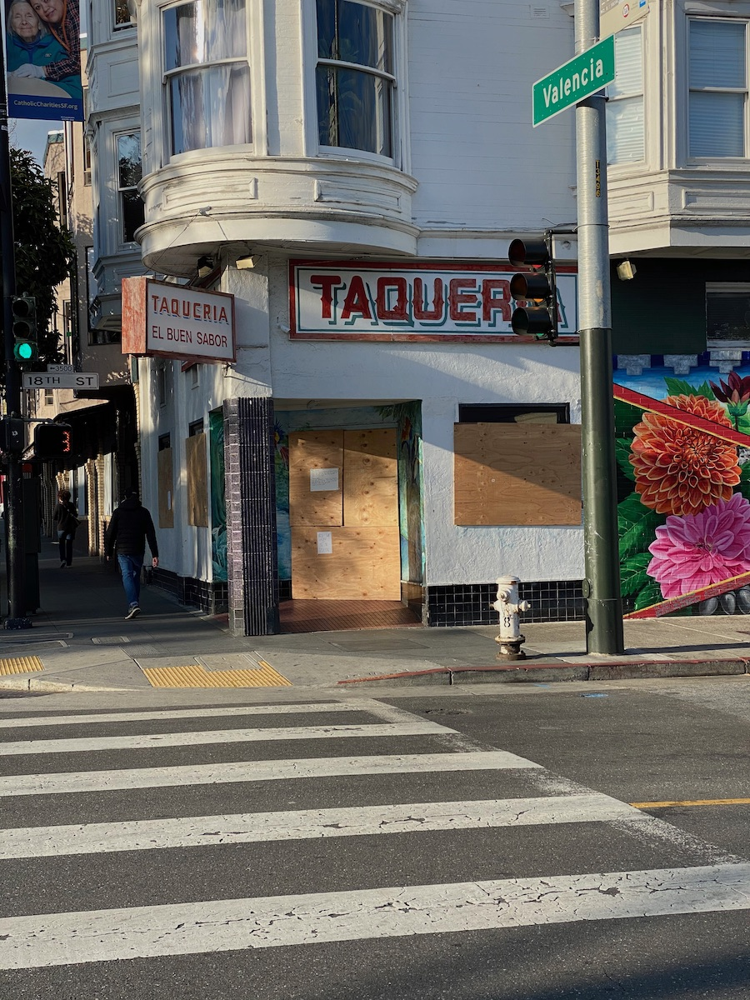

List of COVID-19 supportive spending
Context
This is a list of places I’ve either donated to charitably or explicity supported as a reaction to coronavirus and its effects.
It skews local. There’s not much of a thesis beyond trying to help where I can. When I notice an opportunity or someone suggests something to me I do my best to support.
If you have thoughts or recommendations I would be *~*delighted*~* to discuss.
Everything listed here needs a lot more help.

Beloved local restaurant El Buen Sabor has closed. If you know of a way to support the restaurant or its employees please let me know.
Funds for struggling local businesses and their employees
Meal donations via local businesses for frontline workers
Local and regional charities
Broader or farther afield charities
Personal strategies
- Something is better than nothing.
- Get unstuck by halving donations being considered until it feels like a no brainer. Reasses later.
- Ask people that might not be in a position to donate where they would donate, then do that.
- Patronize whatever is still open in the neighborhood as often as possible.
- Tip astronomically.
- Buy giftcards. Give them away.
- Look at the signs posted on local businesses as you walk around. You might find a way to help.